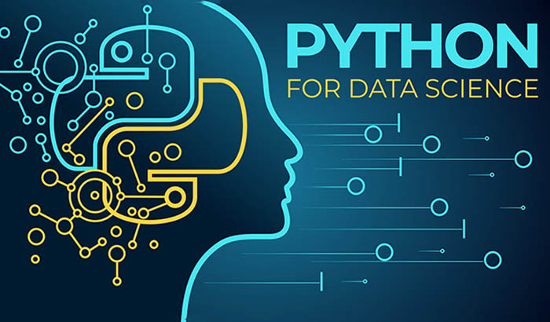
Python
- Python consistently ranks as one of the most popular programming language. It was created by Guido van Rossum, and released in 1991.
- To Run the Python on your Computer simply download and install.
- Python is an easy to learn, powerful programming language. It has efficient high-level data structures and a simple but effective approach to object-oriented programming. Python’s elegant syntax and dynamic typing, together with its interpreted nature, make it an ideal language for scripting and rapid application development in many areas on most platforms.
Introduction
Python is used for:
- web development (server-side),
- software development,
- mathematics,
- system scripting.
What can Python do?
- Python can be used on a server to create web applications.
- Python can be used alongside software to create workflows.
- Python can connect to database systems. It can also read and modify files.
- Python can be used to handle big data and perform complex mathematics.
- Python can be used for rapid prototyping, or for production-ready software development.
Why Python?
- Python works on different platforms (Windows, Mac, Linux, Raspberry Pi, etc).
- Python has a simple syntax similar to the English language.
- Python has syntax that allows developers to write programs with fewer lines than some other programming languages.
- Python runs on an interpreter system, meaning that code can be executed as soon as it is written. This means that prototyping can be very quick.
- Python can be treated in a procedural way, an object-oriented way or a functional way.
Variables
Variables are containers for storing data values.
- A variable can have a short name (like x and y) or a more descriptive name (age, carname, total_volume). Rules for Python variables:
- A variable name must start with a letter or the underscore character
- A variable name cannot start with a number
- variable name can only contain alpha-numeric characters and underscores (A-z, 0-9, and _ )
- Variable names are case-sensitive (age, Age and AGE are three different variables)
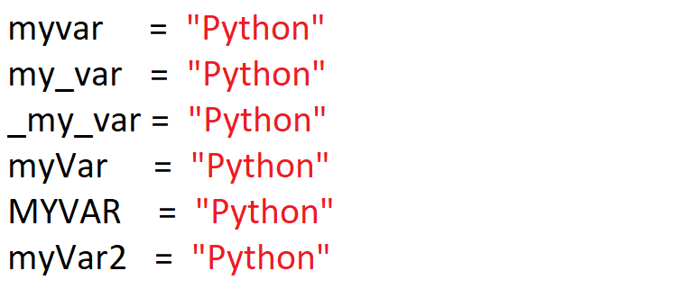
Comments
- Comments can be used to explain Python code.
- Comments can be used to make the code more readable.
- Comments can be used to prevent execution when testing code.
- Comments starts with a #, and Python will ignore them
Data Types
- In programming, data type is an important concept.
- Variables can store data of different types, and different types can do different things.
- Python has the following data types built-in by default, in these categories:
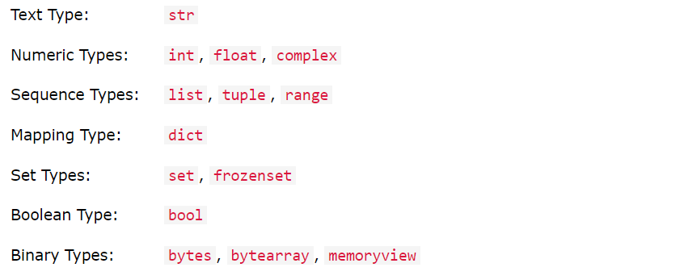
Setting the Data Type
- In Python, the data type is set when you assign a value to a variable:
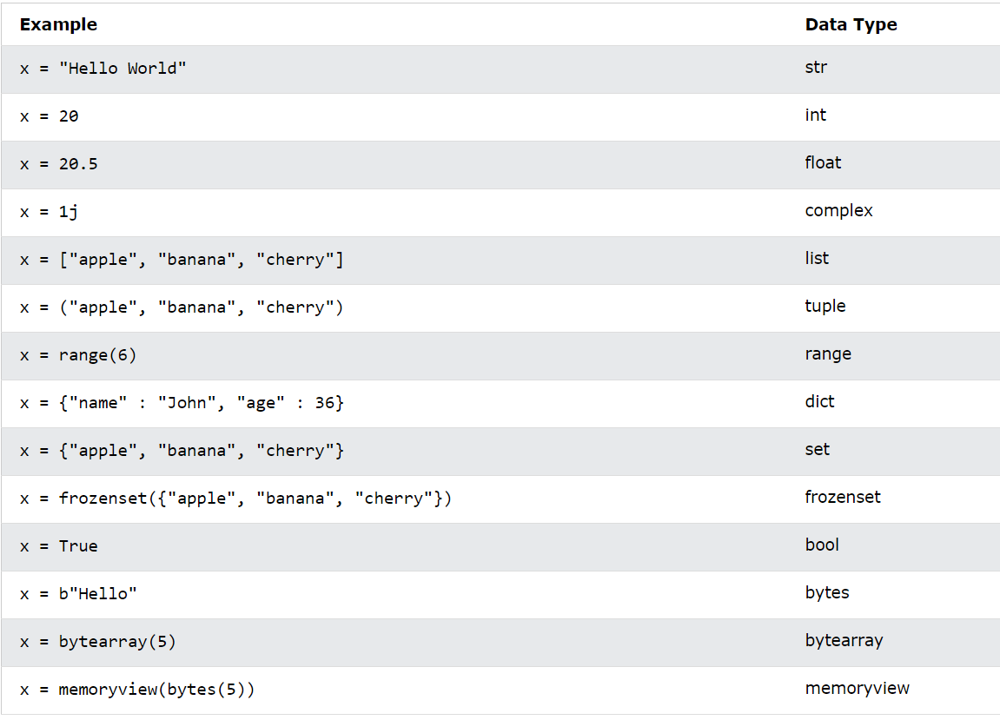
Numbers
There are three numeric types in Python:
- int
- float
- complex
Variables of numeric types are created when you assign a value to them:
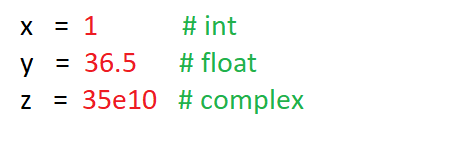
To verify the type of any object in Python, use the type() function:
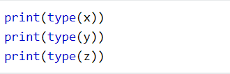
Int
Int, or integer, is a whole number, positive or negative, without decimals, of unlimited length.
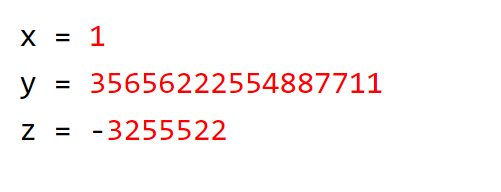
Float
Float, or "floating point number" is a number, positive or negative, containing one or more decimals.
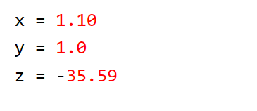
Complex
Complex numbers are written with a "j" as the imaginary part:
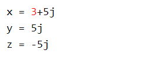
Python Operators
- Arithmetic operators
- Assignment operators
- Comparison operators
- Logical operators
- Identity operators
- Membership operators
- Bitwise operators
Arithmetic Operators
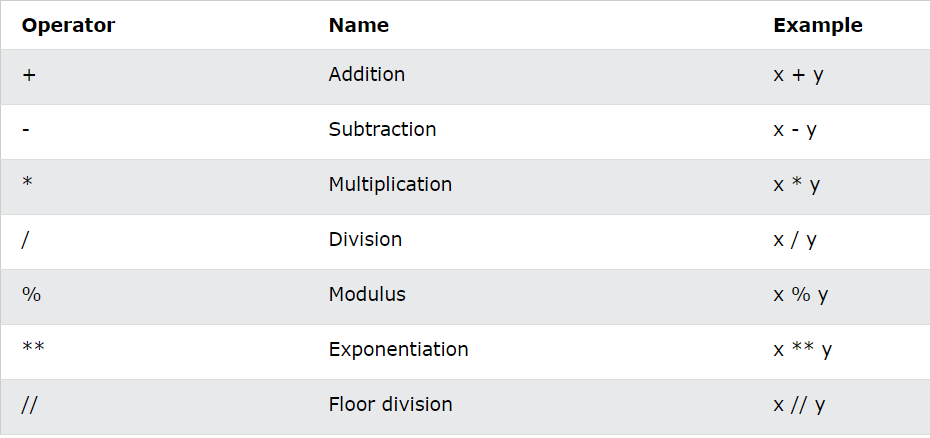
Assignment Operators
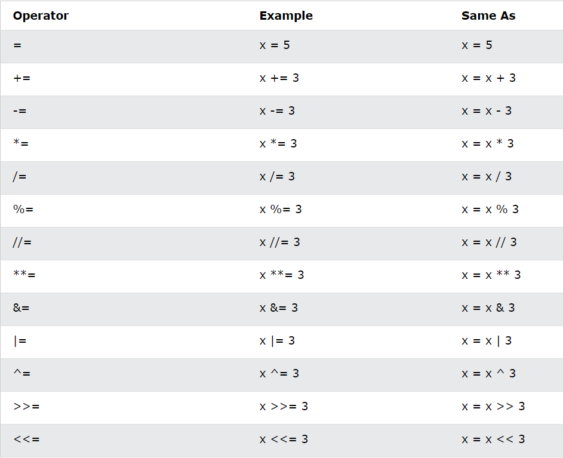
Comparison Operators
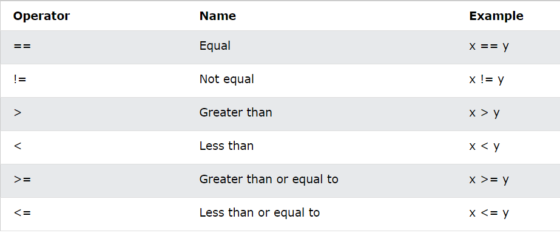
Logical Operators
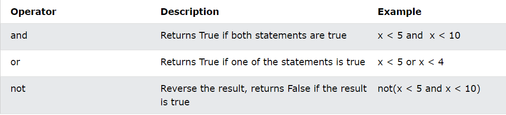
Bitwise Operators
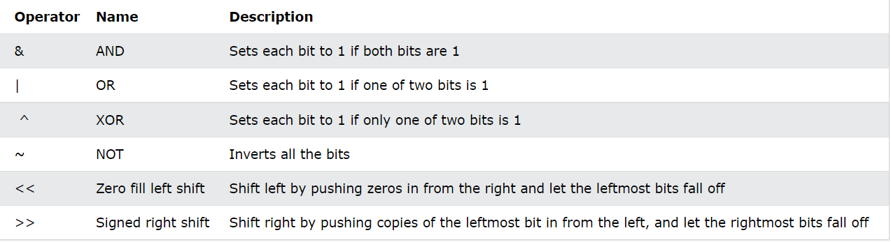
Modules
What is a Module?
Consider a module to be the same as a code library.
A file containing a set of functions you want to include in your application.
Conditions and If statements
Python supports the usual logical conditions from mathematics:
- Equals: a == b
- Not Equals: a != b
- Less than: a < b
- Less than: a < b
- Less than or equal to: a <= b
- Greater than:a > b
- Greater than or equal to: a >= b
These conditions can be used in several ways, most commonly in "if statements" and loops.
If
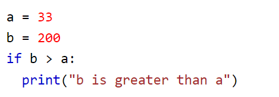
Elif
The elif keyword is pythons way of saying "if the previous conditions were not true, then try this condition".
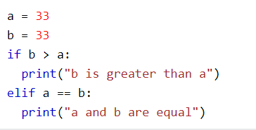
Else
The else keyword catches anything which isn't caught by the preceding conditions.
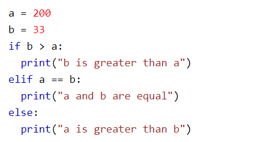